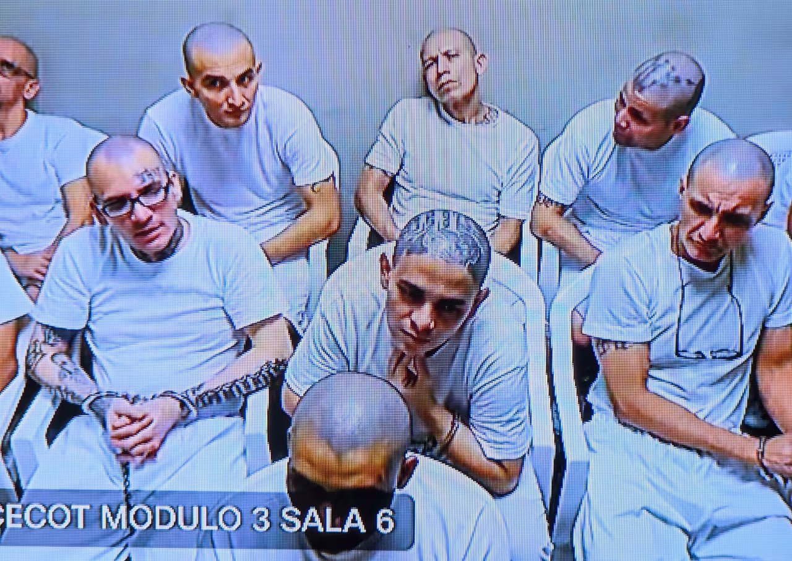

Imagen: Fiscalía General de la República El Salvador
En 2015, El Salvador registraba 106 homicidios por cada 100,000 habitantes, convirtiéndose en el país con la tasa más alta del mundo ese año (Instituto de Medicina Legal de El Salvador, 2015).
En 2024, esa cifra había caído a 1.9, una reducción del 98% en menos de una década (PNC El Salvador, 2025). La caída de la violencia ha sido presentada tanto por el gobierno salvadoreño como por distintos medios internacionales como evidencia del llamado “efecto Bukele”: la recuperación del orden, la seguridad y la paz en el país.
Sin embargo, reducir violencia y construir paz no son conceptos equivalentes. Johan Galtung (1969) distingue entre paz negativa, entendida como la ausencia de violencia directa, y paz positiva, basada en instituciones capaces de garantizar derechos y dignidad. Bajo esa distinción, el caso salvadoreño se vuelve más complejo.
En abril de 2026, 492 líderes de la Mara Salvatrucha, organización que durante décadas controló territorios mediante extorsión, reclutamiento forzado y homicidios sistemáticos, comparecieron virtualmente ante la justicia por más de 47,000 delitos cometidos entre 2012 y 2022, incluidos cerca de 29,000 homicidios (Fiscalía General de El Salvador, 2026). La escena proyecta la imagen de un Estado recuperando control y castigando a actores antes intocables. Pero toda demostración punitiva también cumple una función política: mostrar la capacidad del poder para definir enemigos (Foucault, 1975). En El Salvador, esa lógica opera mediante la normalización de medidas excepcionales que han cambiado el funcionamiento del sistema jurídico.
Cuando la excepción se convierte en una forma ordinaria de gobierno, el orden jurídico deja de suspenderse temporalmente y comienza a transformarse (Agamben, 2004). Los datos lo reflejan: la Asamblea Legislativa autorizó juicios simultáneos de hasta 900 personas, limitó garantías procesales y redujo la edad de responsabilidad penal a 12 años (HRW, 2026). Además, al menos 458 personas murieron bajo custodia sin rendición de cuentas efectiva (HRW, 2026).
Las cifras bajan, pero el mecanismo que permitió esa reducción opera mediante la suspensión de garantías fundamentales. El costo de esa “paz” parece estar en la normalización de medidas excepcionales que debilitan derechos y transforman la relación entre el Estado y la ciudadanía. Lo que El Salvador parece producir no es necesariamente paz positiva, sino una forma de paz negativa sostenida sobre esas condiciones. La pregunta entonces no es solo cuánto disminuyó la violencia, sino qué tipo de orden político se construye en su nombre.
CIPMEX · Centro de Investigación para la Paz México, A.C. · Paz que se piensa, paz que se construye